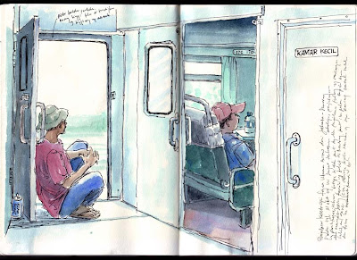

Train Ride Sketches
A commute that used to be a buffer between tasks turned into a small atelier. I started carrying a tiny sketchbook and a mechanical pencil. Quick faces, an overheard line of conversation, a child chasing bubbles — each became a thumbnail and a private joke.
Weeks later I had a string of drawings that made up a short, accidental narrative. People I had never met were characters now, each with a pause and a posture. The ride felt shorter and stranger and somehow more generous.